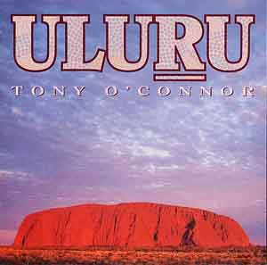

|
オーストラリアに旅行し郵便局に行かれた方はお気づきと思います。郵便局内は日本とは様相がことなり、文房具店に見間違えて
しまいます。鉛筆、ボールペン、ノート、はさみ、セロテープ、プリンター用インク、フロッピー等など所狭しと置いてあります。
当然なのが記念切手も売っており、記念切手もどんどん販売されています。  そんな中甘いメロディーの音楽が流れる事がありました。これはにはつい手が伸びてしまいました。それから、今度はエアーズロ ックの雰囲気を模した音楽が流れ、暑く乾いた大地にディジュリジュが鳴り響きオーストラリアの雰囲気が醸し出されます。また 手が伸びてしまい、次々買ってしまいました。どうも、郵便局の戦略にはまった感じがします。一種のサブリミナルに引っかかったような・・いわゆる洗脳です。記念切手も 買いすぎたし・・・・でもイルカのバルーンを貰ってしまった。７８章「オーストラリア郵便局のくじ引きにあたった」 オーストラリアの郵便料金は安かった、国内一円航空便封筒で約４５円でした。それは郵便業務以外にも文房具を売ったりで多角 経営をしているからではないでしょうか。オーストラリア郵便は国営と聞きます。 この音楽ＣＤは店主のお薦めに案内しております。 ２００１年１１月 ７日 記
|